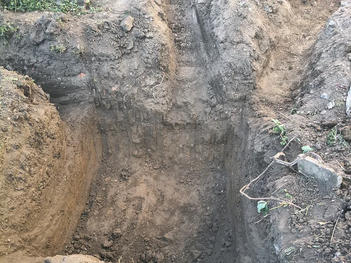
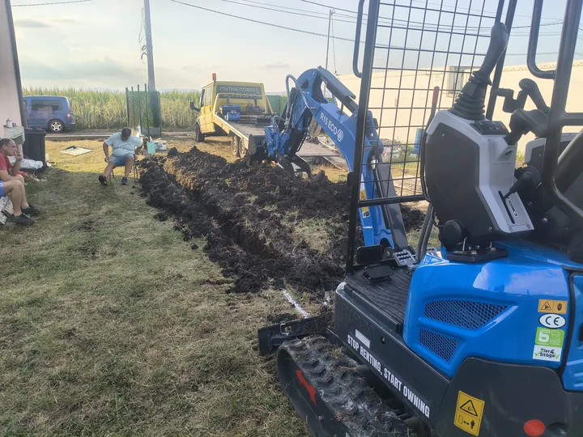
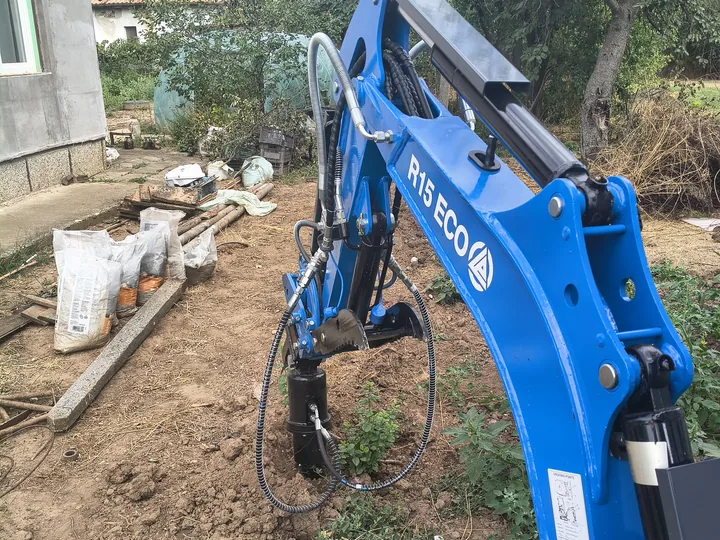
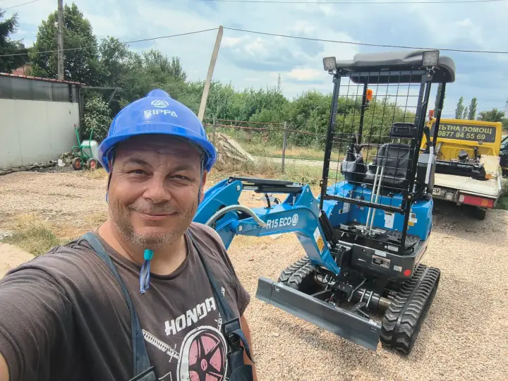

Влиза там, където другите спират
Транспортна ширина около 1 м. Минава през стандартни порти, тесни алеи и дворове между къщи — без да се налага да се демонтира ограда.
МинибагерКостинброд
Компактен мини багер Rippa R15 Eco — 1.5 т с гумени вериги, четири кофи, свредел, чук и хидравличен палец. Собствена доставка на техниката до обекта в София-област.
Пратете снимка на обекта и населеното място — връщаме ориентир същия ден.
В Божурище, Костинброд и селата около София обектите често са тесни, с готови настилки и озеленяване. Тук 1.5-тонният Rippa печели срещу 3-тонните машини.
Транспортна ширина около 1 м. Минава през стандартни порти, тесни алеи и дворове между къщи — без да се налага да се демонтира ограда.
Не драска асфалт и паваж като стоманени вериги. Подходящ за готови дворове, вили и новопостроени къщи, където теренът вече е оформен.
С палеца вадим корени и дънери, местим камъни и товарим отпадъци в контейнер на клиента. Една машина — изкоп + захват.
Техниката пристига с наш транспорт. Не чакате външна фирма. Доставка: 1 €/км в посока, минимум 20 €.
Кофи 20, 30, 40 и 80 см, свредел 150 мм, хидравличен чук и палец. Една машина покрива изкоп, дупки, разбиване и захват.
Фокусът е върху точни изкопи за частни дворове и малки обекти. Не предлагаме извозване на земна маса и отпадъци — само доставка на минибагера и работата на машината.
Прокопаване за оптика и ел. кабели; поливна и капкова система; изкоп за малък басейн, джакузи или резервоар до ~1.8 м.
Ивица за ограда с кофа 40 см + дупки за колове със свредел. Същата кофа — основи за навес, беседка, гараж и тераса до къщата.
Канали за дренаж, водопровод и канализация; водомерна шахта, канавки; изкоп за септична яма до ~1.8 м — без да се разкопава целият двор.
Дворна планировка с кофа 80 см: нива и наклони, тераси, засипване и разпределяне на хумус след изкоп.
Бързо пробиване за оградни колове, жив плет, перголи и засаждане на овошки — 45 €/час, минимум 2 часа.
Стари бетонови пътеки, плочи, замазки и тънки основи. Не е услуга за тежко събаряне на сгради.
Палецът превръща кофата в щипка: изкореняване, местене на камъни, товарене в контейнер — без ръчна работа.
Създаден за частни имоти и труднодостъпни места. Дълбочина на изкоп до около 1.8 м. Готов за прикачен инвентар: кофи, свредел, чук и хидравличен палец.
Вашият Rippa R15 Eco: гумени вериги, хидравличен палец, собствен транспорт, работа в тесни дворове.




Кофи, свредел и чук са нови и готови за смяна на обекта. Коя кофа за какъв изкоп →




Техниката пътува с наш транспорт — не чакате външна фирма за доставка. На обекта работите с човек, който познава машината и региона.
Работите с екипа на Иван Иванов — същият екип стои и зад Пътна помощ Костинброд (5.0 от 106 отзива в Google) и зад Mover Studio.
Извозването на пръст и отпадъци не е част от услугата. При нужда товарим в ваш контейнер или камион с кофата и палеца.
Пратете снимка на обекта и населеното място — връщаме ориентир същия ден.
Четири неща, които ускоряват офертата и спестяват празен ход на обекта. Не извозваме пръст — затова мястото за депониране е част от подготовката.
Машината е широка около 1 м. Измерете светлата ширина на портата и пътя до мястото на работа. Махнете коли и купчини от входа.
Не извозваме земна маса. Посочете място в имота или осигурете контейнер/камион — можем да товарим в него с кофата и палеца.
Отбележете известни линии за ток, вода, оптика. Ако няма схема — кажете; работим по-внимателно или чакаме уточнение преди дълбок изкоп.
Пратете портата, линията на изкопа и терена плюс населеното място — връщаме ориентир същия ден.
Основната единица е машиносмяна — както при повечето фирми в региона. Точна оферта след кратко описание на обекта.
от 90 €
минимум 90 € (3 часа × 30 €)
Покрива подготовка, разтоварване и работа.
от 200 €
8 часа · кофи
До 230 € според терена.
от 250 €
8 часа
До 270 €.
Доставка: 1 €/км в посока · минимум 20 €. Без извозване на пръст/отпадъци. Пълни условия → Цени.
Изкоп и планиране: 200–230€ за 8 часа. С чук: 250–270€. Почасово: 30€/час, минимум 3 часа (90€). Доставка на машината: 1€/км в посока, минимум 20€.
Не. Ние транспортираме само минибагера и извършваме работата. Извозването на материали е за сметка на клиента. Ако имате камион или контейнер на обекта — можем да товарим в него.
Машината е с гумени вериги и ниско тегло. При нормални условия рискът е много по-малък, отколкото при тежък багер. При много мека почва след дъжд обсъждаме подхода на огледа.
Да — изкоп за поливна и капкова система с кофа 20 или 30 см. Тесен канал, минимум пръст, подходящо за готови дворове и вили.
Изкоп за малък басейн, джакузи или резервоар до около 1.8 м — да. По-дълбоки и обемни изкопи изискват по-тежка техника; казваме го на огледа.
Да — дворна вертикална планировка и подравняване с кофа 80 см: изравняване преди трева или настилка, леки тераси, засипване на канали. Не правим голям обемен изкоп за цял строеж и не извозваме земната маса.
Изкоп за септична яма или шахта до около 1.8 м — да. Не изграждаме самото съоръжение (монтаж на резервоар или пръстени, хидроизолация, връзки). По-дълбоки ями изискват по-тежка техника — казваме го на огледа.
Измерете ширината на портата (около 1 м за машината), посочете къде да се струпа пръстта, маркирайте известни кабели и тръби. Пълният списък. Най-бързо: снимка във Viber + населено място — ориентир същия ден.
Почасовата ставка е 30 €/час. Минималното таксуване е 3 часа (90 €).
Да — работим с мини багер (минибагер) заедно с оператор. Не наемате само машината; идваме с човека, който я управлява, и вършим работата на място.
Пратете снимка на обекта и населеното място — връщаме ориентир същия ден.